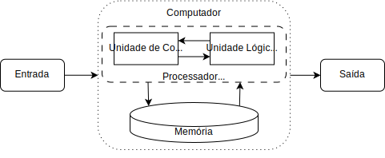

Computadores
Um computador é como um gênio travesso. Te dá exatamente o que você pede dele, mas nem sempre o que você quer.
Este capítulo apresenta os conceitos básico envolvidos na concepção, construção e uso do computador. Espera-se que o texto forneça uma noção superficial de como a parte física e lógica funcionam e servem de base para a construção de programas de computadores.
A humanidade é engenhosa, e sempre buscou criar e aprimorar ferramentas para auxiliar nas realização de tarefas. Assim como o fogo e a roda, o computador é uma ferramenta que revolucionou o mundo, e hoje em dia é difícil encontrar algum tipo de atividade que não seja (ou possa ser) auxiliada por esta máquina que substituiu pessoas no esforço de processar dados e transformá-los em resultados. A história da computação é antiga e está entrelaçada com as histórias dos números, do hardware, de algoritmos e lógica, e da programação
Os conhecimentos envolvidos em computação são muito abrangentes, e são tantas as aplicações e possibilidades que criou-se uma nova área de conhecimento: a Ciência da Computação, que estuda a fundamentação teórica das construções computacionais, bem como suas aplicações em dispositivos tecnológicos e sistemas de computação1. Esta área está intrinsecamente associada a uma ferramenta: o computador que, de forma simplificada, é uma máquina que:
- realiza cálculos [simples] rapidamente;
- lembra de [muitos] resultados.
Um "cálculo" é a execução de uma operação primitiva pela máquina, e um "resultado" é uma informação resultante desta operação ou já conhecida. A computação, portanto, lida basicamente com dois elementos, as informações sendo manipuladas (dados) e as regras de manipulação delas (procedimentos)2. Ao descrever soluções como procedimentos que manipulam (corretamente) dados, pode-se usar o computador máquina para resolver inúmeros problemas.
A aplicação do pensamento computacional é a forma mais interessante para sair da apresentação de um problema até uma solução que funcione corretamente em um computador. Este processo foca em dois elementos básicos: conhecimento descritivo (o que?) e, principalmente, procedural (como?).
Por exemplo, considere o problema "qual a raiz quadrada de um número positivo \(n\)?". É necessário que um valor \(n\) seja fornecido, e deseja-se definir um procedimento que defina um outro valor \(r\) que atenda à condição \(r^2 = n\) (um conhecimento descritivo). Uma possível solução é descrita pelos passos "Método Babilônico" abaixo.
Esta solução segue uma lógica matemática correta, mas não funcionaria em um computador para qualquer valor de \(n\) pois a máquina tem limitações que precisam ser consideradas! Estas serão discutidas ao longo do texto, mas uma solução que vence uma delas é apresentada em "Método Babilônico Computacional". Infelizmente, esta segunda abordagem também não produz resultados exatos para qualquer valor de \(n\). Considerando \(n = 144\), uma estimativa inicial \(r = 1\) e que "suficientemente próximo" signifique que \(|n - r^2| \leq 0,5\), a aplicação das instruções acima resultam na construção da seguinte sequência de valores para \(r\): 1, 72.5, 37.24, 20.55, 13.8 e, finalmente, 12.1.
Independentemente, uma descrição precisa dos passos permite que o computador realize o processo mecânico para chegar à solução aceitável. Para resolver um problema diferente, basta fornecer um grupo diferente de instruções!
Warning
O computador interpreta as instruções no sentido de recebê-las em uma representação específica e traduzi-las em sua operações primitivas para execução, não no sentido de dar-lhes sentido para obter o resultado desejado. Ele faz o que você manda, não o que você quer.
Entender mais sobre esta máquina e como ela funciona é essencial para usá-la na resolução de problemas. O computador, além de processar e armazenar os dados, também precisa movimentá-los entre os dispositivos e controlar toda essa manipulação. Para tanto, é preciso que diversos componentes elétricos, eletrônicos e eletromecânicos (hardware) trabalhem em conjunto para realizar os processos definidos no algoritmo (software).
Arquitetura de Computadores
A arquitetura do computador busca projetar a máquina de tal forma a maximizar desempenho e eficiência energética dentro das restrições de custo, potência e disponibilidade existentes3. A função principal do computador é realizar as computações, ou seja, processar os dados. Isso é feito com as operações básicas de lógica e aritmética que são construídas na máquina. Para viabilizar estas operações, é preciso armazenar os dados, movê-los entre os dispositivos de armazenagem e processamento e gerenciar esta movimentação com o processamento.
Na arquitetura mais comum, as instruções são vistas como informações que armazenadas, ou seja, conhecimento descritivo, e são tratadas como dados que o computador processa. Este modelo de "computador de programa armazenado", em que as instruções e os dados existem em um mesmo meio físico, é conhecido como Arquitetura de von Neumann4, e é a forma mais comum dos computadores modernos. Nela, a solução de um problema é obtida por um ciclo de execução simples: busca (a próxima instrução), decodificação (em instruções primitivas) e execução (das primitivas realizando a computação).

Este modelo representa os principais componentes necessários para o processo de ler a instrução, interpretá-la e executá-la. A memória armazena as instruções (conhecimento procedural) e os resultados intermediários (conhecimento descritivo). Novos dados podem ser fornecidos ao computador por algum dispositivo de entrada ou obtidos dele por um dispositivo de saída. O processador gerencia quais instruções devem ser realizadas e suas execuções, além de movimentar as informações entre os componentes. Para isso, tem dispositivos que realizam operações de aritmética e lógica, testes simples, e manipulação de dados.
A implementação física deste modelo necessita de uma parte física que realiza a tarefa, e de uma parte lógica que define como realizá-la. Apesar de nos preocuparmos mais com a parte lógica neste livro, ambas são essenciais para o bom funcionamento.
Hardware
O hardware é um conjunto de componentes e equipamentos que compõem um sistema computacional, que seguem a arquitetura von Neumann. Os componentes físicos têm diferentes propósitos.
{kind=link}
- ③ Unidade Central de Processamento (UCP) é o dispositivo que interpreta e executa e instruções, lê e escreve a memória. Seus componentes básicos são a UC (que determina quais operações serão realizadas e em que ordem) e a ULA (que realiza operações aritméticas e lógicas). Os registradores, que armazenam os dados sendo processados no momento, também podem ser considerado parte da UCP, mas são conceitualmente parte da memória. O desempenho da UCP era ligado a sua velocidade, mas certos limites já foram alcançados e, atualmente, os esforços são direcionados a outras formas de melhoria.
- ④, ⑧ memória é o dispositivo que permite armazenar dados em um conjunto ordenado de bits. A armazenagem pode ser volátil (perde seus dados com ausência de energia) ou não voláteis. Além disso, há certa hierarquia de tipos, pois o custo é inversamente proporcional a velocidade de acesso. A chamada memória principal contém os dados sendo manipulados na tarefa em execução (na memória volátil), portanto é mais rápida e intermedia o acesso aos dados da memória secundária. Esta serve para armazenamento permanente de dados, tem maior capacidade mas desempenho inferior. A característica mais interessante da memória principal é o acesso aleatório, em que posições específicas de memória são acessadas diretamente, utilizando uma lógica de endereçamento. Isto, e a velocidade do acesso, contrastam com a memória secundária.
-
①, ⑦, ⑨ e ⑩ Entrada/Saída os dispositivos de entrada e saída de dados (E/S ou I/O) permitem a comunicação com o computador, de modo que ele possa receber dados para realizar uma tarefa, e fornecer os resultados desta. Existem diversas formas de transmitir os dados:
- Entrada: teclado, mouse, microfone, scanner, leitor de código de barras, câmera, joystick, etc.;
- Saída: monitor, caixas de som, impressora, etc.;
- E/S: disco rígido, monitor sensível a toques, pendrive, etc.
Além destes componentes "básicos" da arquitetura von Neumann, diversos outros são necessários.
- ② placa mãe conecta os componentes do computador de modo que possam funcionar em conjunto, possibilitando a comunicação entre eles e a distribuição de energia.
- ⑤ placas de expansão que possibilitam o uso de outros componentes periféricos, ampliando as aplicações.
- ⑥ fonte de alimentação que regula a distribuição de energia para os componentes.
- barramento é o sistema de comunicação que transfere dados entre os componentes do computador. A taxa de transferência do barramento é o que define seu desempenho. Barramentos: processador, cache, memória, dispositivos de entrada/saída, dados.
- mainFrame/supercomputador são computadores grande porte, geralmente dedicados a aplicações específicas que demandam o processamento de grandes volumes de informação.
- a "nuvem" é o uso de computadores e servidores compartilhados e interligados por meio da Internet, seguindo o princípio da computação em grade.
O funcionamento de um computador ocorre pela manipulação e comunicação de sinais elétricos entre seus componentes, como um processo físico, sendo os sinais mais simples são os sinais "ligado" e "desligado"5. Esse estado binário de um sinal pode ser representado por um binary digit (um bit), um valor que pode ser um de dois estados distintos e mutuamente exclusivos6: 0 (desligado) ou 1 (ligado). Os conjuntos de bits determinam as informações armazenadas, inclusive os programas que determinam o que a máquina deve fazer.
Software
O software é a parte lógica do sistema computacional, que define quais instruções devem ser executadas pelo hardware. Pode ser dividido em dois tipos, programas de sistema que possibilitam a interação com o hardware (computador e periféricos) e fornecem uma plataforma para execução das aplicações, que realizam tarefas mais específicas como edição de documentos, organização de dados, entretenimento, educacional, manipulação de mídia, e outros.
Programas de Sistema
O sistema operacional é o conjunto de programas que gerencia o hardware e fornece serviços comuns às aplicações. Podem ser de tempo-real, multi-usuário, multi-tarefas, embarcado, entre outros. Possibilita a comunicação com os componentes de núcleo, que controla execução, interrupções, gerenciamento de memória [virtual], acesso a disco e arquivos, comunicação com dispositivos, etc., bem como de comunicação, segurança, interface gráfica, entre outros.
Os sistemas mais conhecidos são: Unix (BSD, GNU-Linux, OS X), Microsoft Windows, Plan 9, Android, etc. É possível ter uma ideia da utilização de cada sistema por sua fatia de mercado. Atualmente, o Windows domina o mercado de desktops, e o de dispositivos móveis é dividido entre Android e iOS. Mas a computação de alto desempenho é praticamente toda em Unix.
Os utilitários são os programas que auxiliam a analisar e configurar o computador, como análise/manutenção de disco, análise de memória, anti-vírus, armazenamento de dados, cifragem, compressão, conectividade com a rede, cópia de segurança, gerenciador de arquivos, monitoração do processador, sincronização de dados/arquivos, entre muitos outros. Alguns exemplos são análise/manutenção de disco, análise de memória, anti-vírus, armazenamento de dados, cifragem, compressão, conectividade com a rede, cópia de segurança, gerenciador de arquivos, monitoração do processador, sincronização de dados/arquivos.
Os controladores de dispositivos, também conhecidos como drivers de dispositivos, são os programas que gerenciam um hardware específico do computador, como barramento, impressora, máquinas digitais, placa de rede/áudio/vídeo/aquisição de sinais, scanner, smartphones, etc.
As interfaces com usuário são programas que interagem com o usuário, geralmente divididos em função do uso via linha de comando ou interface gráfica.
Os programas de desenvolvimento auxiliam o desenvolvimento de programas, como compiladores, interpretadores, IDEs, montadores, depuradores, etc.
Aplicações
São os programas com fins específicos, como navegadores, programa para escritório, entretenimento, e muitos, muitos mais.
As aplicações de maior interesse neste contexto são as de desenvolvimento de software. Durante o aprendizado, vale a pena entender como usar um editor de texto simples e a linha de comando, de modo a consolidar os conhecimentos e habilidades práticas de programação. Entretanto, certas IDEs são de grande valia no processo. Por exemplo, o Thonny.
Esta IDE foi criada com o foco no aprendizado, com interface simples e intuitiva, disponibilizando uma série de informações como conteúdo de variáveis e, principalmente, de depuração integrada. Isso permite que se acompanhe a execução de cada instrução, passo a passo, visualização de chamadas de funções.
Resumo
Chatbot
- Explique a arquitetura Von Neumann.
- O que é hardware em um computador?
- O que é software?
- Explique os níveis de memória de um computador.
- Explique as camadas de software de um computador.
- Explique o conceito de linguagem de programação.
- Qual a diferença entre compilador e interpretador?
Algumas opções são ChatGPT, Gemini, Claude e Llama. Estes modelos podem cometer erros! Verifique as informações em fontes confiáveis.
Exercícios
Descreva os componentes físicos de um computador e suas funcionalidades.
A unidade central de processamento é o dispositivo que interpreta e executa e instruções, lê e escreve a memória, tendo como parte integrante os registradores que armazenam os dados sendo processados no momento. Memória permite armazenar dados em um conjunto ordenado de bits.
Os dispositivos de entrada e saída de dados permitem que humanos e outras máquinas se comunicação com o computador. Exemplos de dispositivos de entrada são: teclado, mouse, microfone, scanner, leitor de código de barras, câmera, joystick, etc. Exemplos de saída são: monitor, caixas de som, impressora, etc. Há dispositivos que fazem ambas: disco rígido, monitor sensível a toques, pendrive, etc.
O barramento é o sistema de comunicação que transfere dados entre os componentes do computador (a taxa de transferência do barramento é o que define o desempenho da máquina). A fonte de alimentação regula a distribuição de energia para os componentes. A placa mãe conecta os componentes do computador ao barramento e à fonte.
Há uma hierarquia entre os diferentes tipos de memória, descreva-a.
A classificação se dá com base em dois conceitos: capacidade de armazenamento e velocidade de acesso. As memórias mais rápidas têm menor capacidade, e vice-versa. O primeiro nível é a memória interna, composta pelos registradores, pequenas unidades extremamente rápidas no processador, e pela cache que serve para intermediar a comunicação ente os registradores e a memória principal. O segundo nível é memória RAM, que é diretamente ligada à UCP para leitura/escrita e já detalhada no texto.
O próximo nível é a memória secundária (não volátil), que é acessada indiretamente pela UCP uma vez que seu conteúdo é transmitido pelo sistema operacional e componentes de comunicação para a memória principal. A capacidade tende a ser significativamente maior que da primária, e exemplos de dispositivos assim são CDs, SSDs, etc. O último nível é a memória terciária, que envolve a manipulação de informações que são muito raramente utilizadas, tanto que podem ser armazenadas de forma isolada, necessitando a reconexão física à máquina (para copiar os dados para a memória secundária).
-
SBC. Currículo de Referência da SBC para Cursos de Graduação em Bacharelado em Ciência da Computação e Engenharia de Computação. URL: http://www.sbc.org.br/documentos-da-sbc/category/131-curriculos-de-referencia. ↩
-
Harold Abelson, Gerald Jay Sussman, and Julie Sussman. Structure and Interpretation of Computer Programs. MIT Press, Cambridge, MA, USA, 1985. ISBN 0262010771. ↩
-
John L. Hennessy and David A. Patterson. Computer Architecture, Fifth Edition: A Quantitative Approach. Morgan Kaufmann Publishers Inc., San Francisco, CA, USA, 5th edition, 2011. ISBN 012383872X. ↩
-
M.D. Godfrey and D.F. Hendry. The computer as von Neumann planned it. IEEE Annals of the History of Computing, 15(1):11–21, 1993. doi:10.1109/85.194088. ↩
-
David A. Patterson and John L. Hennessy. Computer Organization and Design. Morgan Kaufmann Publishers, 2nd edition, 1998. ISBN 15-586-0428-6. ↩
-
Aaron M Tenenbaum, Yedidyah Langsam, and Moshe Augenstein. Estruturas de dados usando C. Pearson Makron Books, São Paulo (SP), 1995. ISBN 8534603480 : 9788534603485. ↩